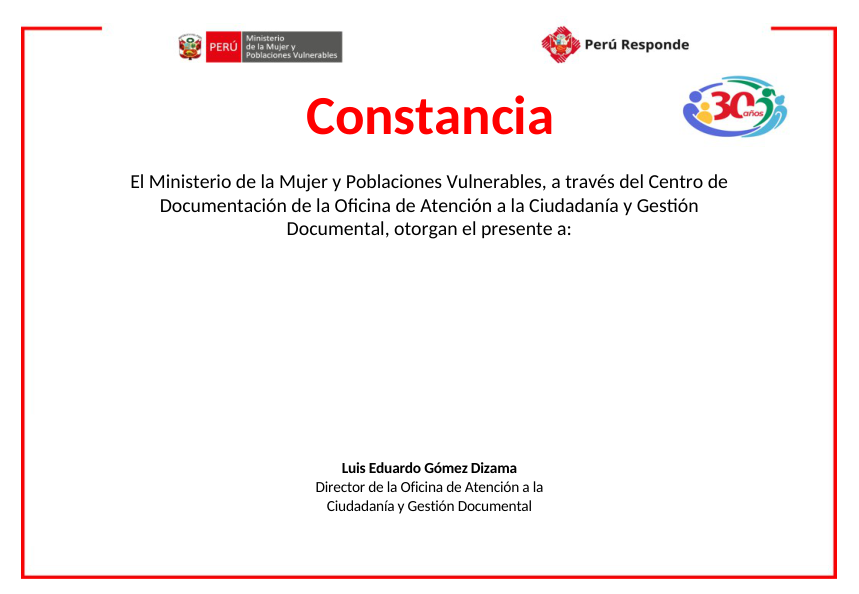

Emisión de constancias de participación
Importa participantes, personaliza los datos variables y genera PDF individuales con el diseño institucional original. Los archivos se procesan en tu navegador.
1
Datos del evento
El encabezado, logotipos y firma nominal del director permanecen en la plantilla fija.
2
Participantes
Columnas: Nombre completo, Correo y, opcionalmente, Enlace. La primera fila debe contener encabezados.
3
Generar constancias
Cada archivo se guardará como Nombre completo.pdf. Los nombres duplicados se numeran automáticamente.
4
Constancias firmadas + QR en el diploma
Carga varios PDF firmados o un ZIP, y el Excel con A: nombre completo y B: enlace de Drive. El sistema vincula automáticamente por nombre (sin distinguir tildes, mayúsculas ni el orden de nombres). No necesitas escoger los PDF uno a uno.
0 PDF
0 enlaces
0 listos
Aviso: el QR se inserta sobre el PDF firmado, en la esquina inferior izquierda. Esto modifica los bytes del documento y puede invalidar su firma digital. Se conserva una copia original intacta en el paquete.
5
Enviar constancias desde el módulo
Una sola lista de constancias, dos formas de salida: Microsoft 365 (Outlook web, nuevo y clásico conectados a Exchange Online) o Outlook clásico local. El sistema asocia los PDF con QR automáticamente.
Outlook clásico local: pulsa «Descargar paquete para Outlook clásico» y descomprime el ZIP y ejecuta INICIAR_BORRADORES.cmd para crear borradores con los PDF adjuntos (Outlook clásico en Windows). GitHub Pages no puede abrir ni controlar Outlook de escritorio directamente. No necesita Microsoft 365 ni Excel: requiere Windows, Outlook clásico instalado y autorización de Windows para ejecutar el auxiliar local.
Requiere autorización institucional: OGTI debe registrar una aplicación SPA para la URL exacta de GitHub Pages y autorizar los permisos delegados Mail.Send y Mail.Send.Shared. Para enviar como cendoc@mimp.gob.pe, tu usuario necesita permiso Send As o Send on Behalf en Exchange. No coloques contraseñas ni secretos en GitHub. El envío es real solo al confirmar; no es un borrador.
Participantes registrados
0 registros| Nombre completo | Correo | Enlace / acciones |
|---|---|---|
| Importa un Excel o agrega un participante. | ||
Vista previa de constancia

La vista previa corresponde al documento generado, antes de firma digital.
Privacidad y envío
Los correos se envían mediante Microsoft Graph únicamente si OGTI habilita la aplicación y el usuario autoriza el acceso. Para Outlook clásico local el módulo entrega un paquete con macro de borradores. Los datos no se almacenan en GitHub.